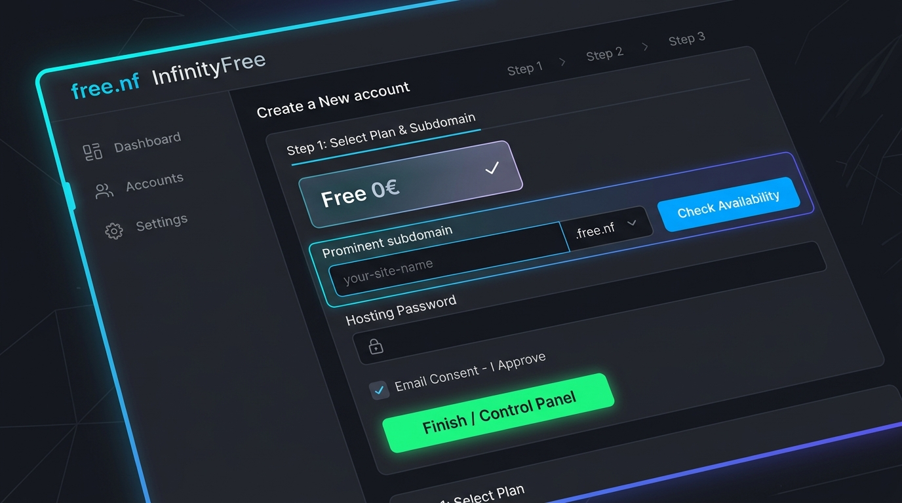
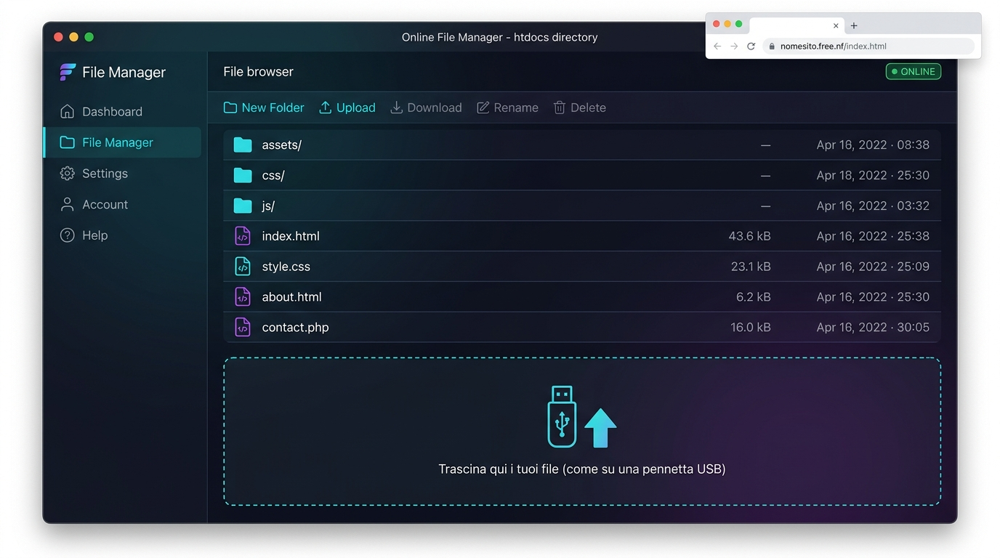

Incontro 1 • Prompting
Guida a Google Gemini Canvas
Come creare un'area di lavoro condivisa con l'IA, modificare blocchi di testo mirati ed esportare il codice HTML/CSS generato per il proprio sito.
Benvenuti nella pagina polo delle guide pratiche di Snodi Formativi AI. In questa sezione troverai procedure guidate, schermate commentate e checklist operative per mettere in produzione i progetti digitali creati con l'Intelligenza Artificiale, rendendoli fruibili a scuola, agli studenti e alla comunità educante.
Durante le giornate di laboratorio abbiamo sviluppato pagine web interattive (HTML, CSS e JavaScript), come la Single-Page Application dell'Incontro 3. Per rendere questi progetti visibili a chiunque su Internet senza spendere un centesimo, utilizziamo il servizio di hosting gratuito https://free.nf/. Segui con attenzione i passaggi illustrati di seguito.

Apri il tuo browser preferito e collegati alla pagina web ufficiale del servizio: 🔗 https://free.nf/
Una volta entrati nella schermata principale del proprio profilo, individuate nel pannello laterale o nella barra superiore il pulsante / voce di menu denominato:
Cliccandoci sopra avrete la visualizzazione d'insieme di tutti i vostri spazi web attivi.
Nella schermata degli account hosting:
Fornisce 5 GB di spazio su disco, banda illimitata, supporto PHP e MySQL e certificato SSL HTTPS gratuito, perfetto per pubblicare tutti i siti e gli esperimenti del corso.
Nella sezione Domain Name selezionate l'opzione Subdomain (sottodominio gratuito incluso):
progetto-scuola, didattica-ai-2026, laboratorio-rossi). Consigliamo di usare solo caratteri minuscoli, numeri e trattini, senza spazi né accenti..free.nf, .infinityfreeapp.com, .epizy.com).L'estensione può essere qualsiasi tra quelle proposte. In questo contesto didattico, la scelta si effettua unicamente in base al livello di facilità nel ricordarla, pronunciarla e dettarla ai colleghi o agli studenti (es. l'estensione .free.nf è particolarmente breve e immediata).
I domini web sono identificativi unici al mondo: due siti non possono avere esattamente lo stesso indirizzo.
2026) o selezionare una diversa estensione nel menù a tendina.Per proteggere il vostro spazio di hosting e finalizzare la procedura:
Premete il pulsante di invio (es. Create Account o Submit):
Una volta completata l'attivazione in background:
Apparirà un evidente pulsante verde sullo schermo: cliccateci sopra e sarete immediatamente reindirizzati nella schermata di gestione con tutte le impostazioni generali del vostro nuovo dominio (indirizzo IP del server, parametri FTP, stato attivo).
Dalla schermata di configurazione del dominio:
htdocs.index.html (la pagina principale del vostro sito web)giornata-1.html, guide.html, ecc.)assets/ contenente i fogli di stile (css/), gli script (js/) e le immagini (img/).Potete caricare i file sia tramite il pulsante Upload del File Manager, sia trascinandoli (Drag & Drop) direttamente dalla finestra delle cartelle del vostro computer dentro l'interfaccia web del browser.

htdocs. Il caricamento funziona esattamente come il salvataggio su una chiavetta USB: trascinando i file, il sito diventa immediatamente raggiungibile su Internet.
Una volta caricato tutto all'interno di htdocs, il vostro sito web è immediatamente online e accessibile da qualsiasi computer, smartphone o tablet nel mondo!
Per visualizzare i contenuti vi basterà aprire una nuova scheda del browser e digitare:
# Per aprire la Home Page (il file index.html viene aperto in automatico): https://nomesito.estensione # Per accedere direttamente a un file specifico o a una pagina: https://nomesito.estensione/nome_file # Esempi pratici: https://scuola-ai.free.nf/ https://scuola-ai.free.nf/giornata-1.html https://scuola-ai.free.nf/assets/img/hero.jpg
I server web cercano sempre come file iniziale predefinito quello che si chiama esattamente index.html (tutto minuscolo). Se chiamate la vostra pagina iniziale con un altro nome, dovrete necessariamente specificarlo per intero nell'URL dopo la barra finale (/).
Fai una prova pratica prima di registrare il tuo hosting: inserisci il nome che intendi dare al tuo sito, seleziona l'estensione preferita e scopri esattamente quale sarà l'indirizzo da dettare ai tuoi studenti o colleghi!
index.html, puoi anche accedere semplicemente digitando https://mio-progetto-scuola.free.nf!
Spunta le caselle man mano che esegui i singoli passaggi per tenere traccia del tuo stato di avanzamento:
Oltre alla pubblicazione su free.nf, ecco i riferimenti rapidi alle altre procedure chiave affrontate durante i cinque incontri del nostro percorso:
Come creare un'area di lavoro condivisa con l'IA, modificare blocchi di testo mirati ed esportare il codice HTML/CSS generato per il proprio sito.
Procedura per ottenere gratuitamente una chiave API per docenti, impostare il System Prompt e convertire disegni e immagini per compiti scolastici.
Come strutturare un'applicazione web monopagina conforme al GDPR e all'AI Act europeo, pronta per essere caricata su free.nf.